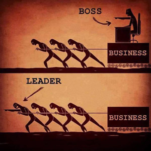

C is a general-purpose, high-level language that was originally developed by Dennis M. Ritchie to develop the UNIX operating system at Bell Labs. C was originally first implemented on the DEC PDP-11 computer in 1972.
In 1978, Brian Kernighan and Dennis Ritchie produced the first publicly available description of C, now known as the K&R standard.
The UNIX operating system, the C compiler, and essentially all UNIX application programs have been written in C. C has now become a widely used professional language for various reasons -
Easy to learn
Structured language
It produces efficient programs
It can handle low-level activities
It can be compiled on a variety of computer platforms
Facts about C
C was invented to write an operating system called UNIX.
C is a successor of B language which was introduced around the early 1970s.
The language was formalized in 1988 by the American National Standard Institute (ANSI).
The UNIX OS was totally written in C.
Today C is the most widely used and popular System Programming Language.
Most of the state-of-the-art software have been implemented using C.
Today's most popular Linux OS and RDBMS MySQL have been written in C.


c
d
e
f
g
h
i
j
k
l
m